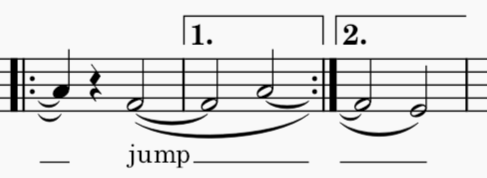

跨越反复和跳转的项目
有时，可以跨越多个音符的项目可能在反复或跳转之前开始，但需要在反复或跳转的另一侧结束。这可能意味着结束点实际上在乐谱中出现在起始点之前（例如，回到反复起点时，或在 D.C. 或 D.S. 处），或者可能在起始点之后但中间有其他材料，比如跳过第一结尾小节或跳到 coda 时。
MuseScore Studio 对某些类型的项目支持此行为，具体来说是延音线、连音线和歌词线。每种类型项目的创建方式略有不同。
以下说明将以这个简短示例作为模型：

之前

之后
延音线
要添加一条跨越反复或跳转的延音线：
- 选中延音线的起始音符
- 按 T 或单击工具栏中的延音线图标。
延音线会被绘制到所有存在相同音高音符可连接的有效位置。一条延音线完全可能有多个端点，因此可能出现多个分段。
在示例中，向第一结尾小节中的 A 添加延音线，会创建一条从该音符到结束反复小节线的部分延音线，以及一条从开始反复小节线到第一小节中 A 的部分延音线。
向第一小节中的 F 添加延音线，会创建一条到下一个音符的“普通”延音线，但同时也会创建一条到第二结尾小节中 F 的部分延音线。这是一个具有多个端点的延音线的示例。如果你选中这样一条延音线，会看到一个弹出框，列出该延音线连接到的位置：

你可以在此列表中选择或取消选择项目，延音线分段会相应地出现或消失。你也可以选择任意端点处的部分延音线分段并将其删除。
连音线
连音线可以跨越任意范围的音符，而不仅仅是连接相邻音符，因此 MuseScore 无法为你“自动”创建这些。因此，你必须手动添加各个分段。
要添加一个连音线分段：
- 通过单击一个端点，然后 Ctrl+单击（macOS：Cmd+单击）另一个端点来选择连音线的两个端点。一个端点必须是音符，另一个端点必须是反复小节线或带有跳转的小节线（D.C.、D.S. 等）
- 按 S 或单击工具栏中的连音线图标。
如果你有一条在跳转后第一个音符上开始、或在跳转前最后一个音符上结束的连音线，并且想把跳转旁的端点移到“悬垂”位置，可以通过选中该端点并按 Shift+Alt+Left/Right（macOS：Shift+Option+Left/Right）来实现。
歌词线
歌词延长线和连字符线也可以跨越跳转添加；与连音线一样，各个部分需要手动输入。
有关输入歌词的一般信息，参见 歌词。
要在反复或跳转之后添加部分歌词线：
- 选中反复或跳转之后的第一个音符
- 键入 Ctrl+L（macOS：Cmd+L）进入歌词输入模式
- 键入 _ 表示延长线，或键入 - 表示虚线（前面不要有任何其他字符）；该线会从小节线之后开始绘制。如有必要，重复按键以将线延伸跨越更多音符。
要删除这种类型的部分歌词线，只需选中它并按 Del。只有像这样的部分线（前面没有音节）才能以这种方式选中。普通歌词线是其前面音节的从属项，不能直接选中。
进入反复或跳转的歌词线是在歌词输入过程中以“普通”方式添加的：一旦你到达跳转前的最后一个音符（该音符上可能有一个音节，也可能有之前开始的歌词线的延续），只需键入 _ 或 -，该线就会一直绘制到反复或跳转处。
可以选中这种类型的部分歌词线以将其删除（按 Del）。这与普通歌词线形成对比，普通歌词线是其前面音节的从属项。
在本页顶部的示例中，歌词按以下方式输入（这些可以按任意顺序进行）：
- 选中第一个 A，进入歌词输入模式并键入 _ 一次；这会创建一条从反复小节线开始的部分歌词线
- 选中第一个 F，进入歌词输入模式并键入
jump，然后键入 _ 三次；第三次按键将歌词线延伸到反复小节线 - 选中第二个 F，进入歌词输入模式并键入 _ 两次。